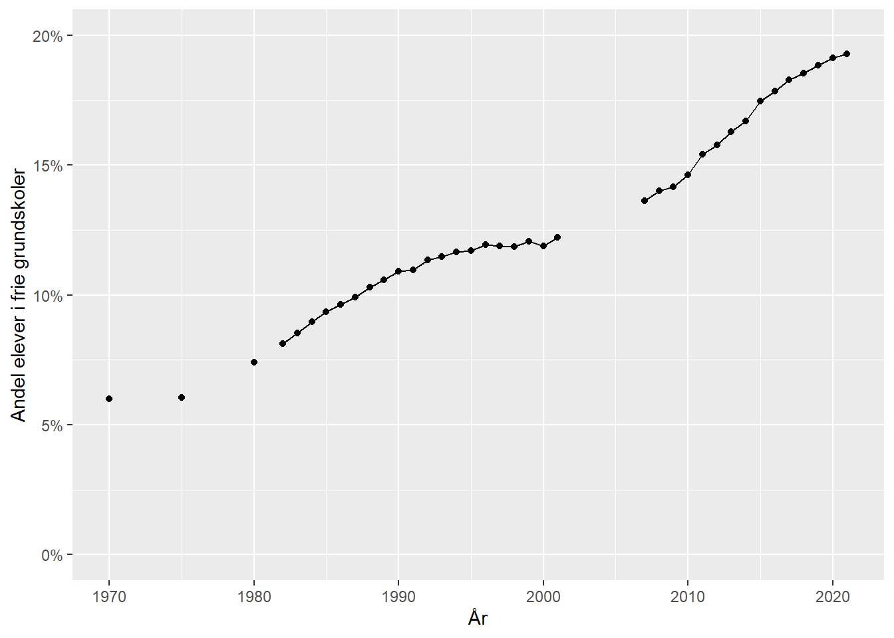

af
Simon Calmar Andersen, Professor, Institut for Statskundskab, Aarhus Universitet
Martin Bækgaard, Professor, Institut for Statskundskab, Aarhus Universitet
Peter Bjerre Mortensen, Professor, Institut for Statskundskab, Aarhus Universitet
Danmark har fået en regering, der vil gennemføre reformer. Som det fremgår af regeringsgrundlaget, er det et erklæret mål ikke at være en “driftsregering”. Tværtimod vil regeringen under overskriften Velfærd 2.0 “udvikle og fremtidssikre Danmark”. Det skal ske i et reformprogram, som består af otte spor: beskæftigelse, frisættelse, rekruttering, sundhed, uddannelse, trivsel, værdighed og vækst.
Vores ærinde med denne kronik er at give de ihærdige reformatorer et par velmente råd med på vejen, før de kaster sig ud i at forsøge at fikse den danske velfærdssektor. Især når det gælder produktion af velfærdsservice - uddannelse, børnepasning, ældrepleje og sundhed – er det langt fra givet, at reformer giver de ønskede resultater.
Tag som eksempel folkeskolereformen fra 2014, der blandt meget andet indførte krav om mere bevægelse i løbet af skoledagen. Men som efterfølgende evalueringer har vist, fungerer det ikke sådan, at når politikerne på Christiansborg siger “hop”, så hopper eleverne ude i klasseværelserne. Evalueringerne har mere generelt vist, at der ikke er klare tegn på, at reformens mål om bedre faglighed og trivsel i folkeskolen, er blev indfriet (VIVE 2020).
Eller tag FGU-reformen fra 2017, som skulle styrke unges muligheder for at blive klar til erhvervsuddannelse, gymnasial uddannelse eller beskæftigelse. Her fem år efter er mange af de nyoprettede FGU-skoler økonomisk nødlidende, og elevtallene har langt fra udviklet sig som forventet.
Det betyder ikke, at velfærdsreformer ikke kan føre fremskridt og forbedringer med sig, men der er mange eksempler på, det ikke sker, og også en del eksempler på, at reformer har ført til det stik modsatte af udvikling og fremtidssikring.
For reformer af velfærdsproduktion er komplekse. De skal virke ned igennem rigtig mange organisatoriske led, igennem hundredvis af ledere og tusindvis af medarbejdere, og endnu flere brugere og eventuelt pårørende. Det gør det ikke bare svært at forudsige, hvordan sådanne reformer kommer til at virke i praksis. Det kræver også en god forståelse for, hvordan ledere, medarbejdere og borgere i alle led opfatter og reagerer på nye krav og tiltag.
På den måde er reformer af velfærdsproduktion en helt anden og langt mere kompleks størrelse end de klassiske udbudsreformer, hvor man kan sidde på Christiansborg og justere på en skattesats eller skrue op og ned for den ene eller den anden offentlige ydelse. Hvis ikke borgerne reagerer som forventet, kan man give den et nyk mere i den ene eller den anden retning.
Den samme mulighed har man ikke, når det gælder reformer af velfærdsproduktion. Disse reformer går ofte ind og ændrer ved organisatoriske strukturer og arbejdsgange på en måde, som ikke bare kan rulles tilbage, hvis reformen ad åre viser sig at have utilsigtede negative konsekvenser.
Men hvis det er så svært at forudsige, hvordan reformer af velfærdsservice virker i praksis, kan man så overhovedet give regeringen et godt råd? Svaret er ja, men rådet handler først og fremmest om, hvordan den bedst tilrettelægger og gennemfører reformerne.
Det vigtigste råd er, at regeringen går frem med afgrænsede reformer, som er tilrettelagt på en måde, så der løbende opnås viden om, hvordan reformen virker, og så man har mulighed for at handle på denne viden.
Et godt eksempel på styrken i denne fremgangsmåde kan man hente fra den nyvalgte, socialdemokratisk ledede regering i 2011, som havde et ønske om at øge tilstedeværelsen af lærere i klasseværelset for derigennem at styrke elevernes trivsel og læring. Men det var et åbent spørgsmål, hvordan det mål bedst kunne indfris. Skulle der være to læreruddannede i klasseværelset, eller kunne det være en fordel, hvis den ene havde en anden uddannelsesbaggrund? Og ville en ekstra underviser overhovedet gøre en forskel for elevernes trivsel og læring?
For at opnå mere sikker viden om det spørgsmål, før en reform eventuelt skulle rulles ud i stor skala, gennemførte Thorning-Schmidt regeringen denne reform som et forsøg, hvor der i samarbejde med en gruppe forskere blev trukket lod om, hvilke skoler og klasser, der skulle have en ekstra underviser af den ene eller den anden slags, og hvilke der skulle forsætte som hidtil med en enkelt lærer. Denne reformtilgang gjorde det faktisk muligt at få nogenlunde sikker viden om, hvordan de forskellige reformvarianter virkede. Interessant nok viste resultaterne i øvrigt, at de positive effekter af en læreruddannet og en ikke-læreruddannet ekstra-lærer i klassen var cirka lige store (Andersen et al. 2020).
Et andet eksempel er forsøgene Hurtigt i Gang 1 og 2, som sigtede mod at hjælpe nyledige dagpengemodtagere tilbage i arbejde. Forsøgene blev gennemført i et samarbejde mellem Styrelsen for Arbejdsmarked og Rekruttering (STAR) og en gruppe forskere. Her lykkedes det i det første lodtrækningsforsøg at få flere ledige i beskæftigelse med en kombination af afklarings- og jobsøgningsforløb, kontaktsamtaler og aktivering (STAR 2023). I et opfølgende lodtrækningsforsøg blev det undersøgt, hvilke af disse reformelementer der faktisk havde bedst effekt på målgruppen (Maibom, Rosholm, and Svarer 2017).
Fordelene ved denne forsøgsvise tilgang til reformer af velfærdsproduktion er mange. Som i eksemplerne med tolærerordninger og beskæftigelsesindsatsen kan man afprøve forskellige varianter af en reform uden på forhånd at lægge sig fast på en bestemt model. Samtidig får man med denne prøven-sig-frem med forskellige modeller både hurtig og bedre viden, end den man kan få ved at lade kommissioner sidde i årevis og prøve at forudsige noget, som er så komplekst, at det ikke kan forudsiges bag et skrivebord.
Det er med andre ord en reformtilgang, som lægger op til dynamiske og løbende reformer af den offentlige sektor frem for de mastodontreformer, som ikke sjældent risikerer at gøre mere skade end gavn. Blandt andet fordi de ofte bliver mødt med stor skepsis og modstand hos dem, som skal gennemføre reformerne i praksis. Går man afgrænset og forsøgsvis til værks, nedsætter man modstanden og giver i stedet de gode eksempler og erfaringer mulighed for at sprede sig.
Det er samtidig en reformtilgang, som er økonomisk attraktiv. I forsøget med tolærerordninger skulle man kun finansiere ekstra lærere i et mindre antal skoleklasser, og bagefter har skoler, kommuner og landspolitikere kunnet bruge den opnåede viden til at prioritere, hvornår de vil benytte sig af to undervisere i klasserne og dermed målrette indsatsen de fag og klasser, hvor det giver størst effekt. Havde man i stedet fra centralt hold bestemt, at en tolærerordning skulle rulles ud over hele landet på én gang, havde resultatet været en dyr reform, som ingen havde en kinamands chance for at vurdere effekten af.
I det reformoplæg, som indgår i regeringsgrundlaget, søger man imidlertid forgæves efter denne afgrænsede, systematiske og forsøgsvise tilgang til velfærdsreformer. Det kunne ellers netop være en såkaldt 2.0 tilgang, hvor man gik til reformer af velfærdsproduktion på en ny måde.
Vender vi os mod regeringens primære rådgiver på dette punkt, Kommissionen for 2. generationsreformer (Reformkommissionen), må man også lede forgæves efter en systematisk, forsøgsvis tilgang til reformer. Tværtimod er der dele af kommissionens forslag, hvor der på et særdeles tyndt grundlag, lægges op til drastiske reformer.
Fx lægger kommissionen op til at skære et år af op imod halvdelen af universiteternes kandidatuddannelser baseret på nogle vurderinger, som kommissionsformanden selv kalder “bedste mands bedste bud”. Samtidig beder kommissionen om endog meget stor tålmodighed, når det gælder evalueringen af reformens fulde effekter, som først opnås, “når omlægningen er fuldt indfaset, dvs. når op imod 45 årgange har gået på de nye uddannelsesveje”(!).
Det er på den ene side befriende med en kommission, som åbent og ærligt erkender, at det er behæftet med stor usikkerhed, om de forslag, de kommer med, har positive eller negative effekter. Men den store usikkerhed bør afspejle sig i, hvordan reformerne rulles ud, og det gør reformkommissionens anbefaling ikke på dette punkt.
Der er også andre af regeringens reformplaner, som vil egne sig godt til den systematisk afprøvende fremgangsmåde. Det gælder fx forslaget om at gøre undervisningen i folkeskolen mere praksisorienteret. Det kan der være mange gode grunde til, men igen er det ikke så simpelt, at fordi undervisningsministeren siger “klip-og-klister”, så begynder alle matematiklærere at omlægge geometriundervisningen til at klippe og klistre mure og hustage som firkanter og trekanter.
Andre eksempler på reformplaner i regeringsgrundlaget, som vil egne sig til systematisk afprøvning er (i) tankerne om en ny beskæftigelsesindsats, hvor der som nævnt foreligger gode lodtrækningsforsøg at bygge videre på, (ii) ambitionerne om at nedbringe sygefravær, som er prisværdige men ikke lette at styre fra Christiansborg og (iii) psykiatri og mental trivsel, hvor der også kan bygges på velafprøvede programmer målrettet forskellige målgrupper (se f.eks. Psykiatrifondens Mind My Mind eller Center for ADHD’s De Utrolige år).
Regeringsgrundlagets afsnit om frisættelse giver umiddelbart plads til, at man ude i kommunerne kan eksperimentere med nye måder at løse de borgernære velfærdsopgaver på. Det er alt andet lige positivt og foreneligt med en gradvis og eksperimenterende tilgang til reformer. Men hvis ikke frisættelsen tilrettelægges på en måde, hvor der systematisk kan følges op på, hvad der virker, og hvad der ikke virker, så lærer vi intet af disse eksperimenter.
Dunkle og i bedste fald usystematiske procedurer for ansøgning om og tildeling af frikommuneforsøg er en væsentlig årsag til et lavt videns- og læringsudbytte af ikke mindre end 40 års erfaring med frisættelse og frikommuner i Danmark.
En selvstændig problemstilling knytter sig til de omkostninger, som er forbundet med den praktiske gennemførelse af storskalareformer. Mens udbudsreformer som nævnt ofte i hovedsagen kan klares med at ændre en skattesats eller en ydelsestakst, kræver reformer af velfærdsservice, at kommuner, institutionsledere og medarbejdere er klædt på til at implementere en ny måde at arbejde på. Det kræver tid og ressourcer at omstille arbejdsgange og rutiner fra én modus til en anden. Matematiklæreren skal fx muligvis have noget efteruddannelse i, hvordan undervisningen kan gøres mere praksisorienteret, så det ikke ender med, at eleverne hverken får interesse for håndværk eller matematik.
Og skolelederen skal både have tid til og bruge tid på at finde ud af, hvordan den nye, praksisorienterede undervisning kan blive noget, som alle lærere kaster sig ind i med ildhu – fremfor at blive opfattet som endnu en forstyrrende topstyring, som risikerer at underminere troværdigheden af regeringens budskaber om frisættelse af kommuner og medarbejdere.
Hvis man alene regner på, hvad en reform koster, når hele driftsapparatet engang er omstillet til den nye arbejdsform, gør man regning uden vært. Man må også indregne, at store velfærdsreformer har store transaktionsomkostninger. Omstillingsfasen koster tid og ressourcer, hvad man i lutter reformiver ofte glemmer. Derimod kan man spare penge og samtidig reducere risikoen for reformfejlslag ved at indføre reformer forsøgsvis nogle, men ikke alle steder på én gang.
Når det gælder velfærdsproduktion, sker forbedringerne på marginalen. Det vil sige, at de sker gradvist, i små ryk, frem for i spring. Set i et længere perspektiv er der mange eksempler på en offentlig og i vidt omfang decentral velfærdssektor, som har leveret mere kvalitet for pengene.
Imidlertid taler både regeringen og reformkommissionen om, at vi som samfund står over for problemer, som er uløste, og som derfor skal løses. Det er en retorik, som modarbejder den reformtilgang, vi har argumenteret for. For hvis reformer skal løse fundamentale samfundsproblemer, må det nødvendigvis være store og gennemgribende reformer, som en gang for alle rydder op efter de problemer, som man har erkendt, men ikke tidligere været i stand til at løse.
Måske kan man med økonomiske indgreb løse problemer med betalingsbalancen eller med et underskud på den strukturelle saldo. Men selv de bedste reformer løser ikke kvaliteten af uddannelse, problemet med marginaliserede borgere, problemet med unges trivsel, osv. Det vil være bedre at afstemme forventningerne ved at tale om, at moderate reformer kan skabe forbedringer i en velfærdssektor, som på lange stræk allerede er velfungerende.
Som nævnt indledningsvis er regeringens erklærede mål, at den ikke skal være en driftsregering. Det er fint nok, men hvis den vil lave reformer, der virker, skal den have forståelse for drift. Det er god og sikker drift, der skal få vores folkeskoler, sygehuse, plejehjem og universiteter til at levere velfærdsservice af høj og stigende kvalitet.
Da SVM-regeringen, ligesom både tidligere og kommende regeringer, vil have vanskeligt ved at gennemskue, hvordan reformer af den decentrale velfærdsdrift kommer til at virke i praksis, bør den på den ene side skrue op for den forsøgsvise og systematiske afprøvning af nye måder at gøre tingene på, og på den anden side pakke den ubegrundede tro på store og gennemgribende reformer væk.
Indlæg bragt i Politiken 25. december 2022
Med jævne mellemrum præsenterer medierne undersøgelser, der viser, hvordan andelen af elever, som går i privatskole (eller mere præcist “frie grundskoler”), er steget de seneste år. Det skorter sjældent på politikere, eksperter og andre meningsdannere, som mener at vide, hvad der er forklaringen på denne stigning. Der henvises for eksempel til folkeskolereformen fra 2014 med dens øgede timetal, inklusionsreformen fra 2012 med dens ambition om at flere elever med særlige behov skulle inkluderes i den almindelige undervisning, eller kommunalreformen fra 2007, der førte til skolelukninger på landet og åbning af private protestskoler.
Men her kommer en lille quiz: I hvilket årstal bragte Politiken en artikel under overskriften “Flugten fra folkeskolen”? … Ja, det er der (mindst) to rigtige svar på: Det ene er rigtige svar er 2022 (jf. artikel fra 22. marts “Flugten fra folkeskole til privatskoler udvikler sig voldsomt og hurtigt”). Det andet rigtige svar er 1984 (8. august). For snart 40 år siden kunne man altså læse i Politiken om “flugten fra folkeskolen”, som på det tidspunkt havde været i gang i hvert fald fem år. Der er altså ikke tale om en ny udvikling, som kan forklares af de senere års reformer, men en udvikling som går over 40 år tilbage.
Figuren her på siden er dannet på baggrund af tal fra nye og gamle publikationer fra (Børne- og) Undervisningsministeriet (Bang 2003) (Undervisningsministeriet 2014). Trods manglende data fra nogle årstal viser figuren støt stigende andel af børn, der går i de frie grundskoler. Fra 1970 til 1980 lå andelen stabilt på 6-7 %. Men de følgende cirka 40 år er den steget med cirka 12 procentpoint til omkring 19 %. Det er en stigning på 0,3 procentpoint eller næsten 1 procentpoint hvert tredje år. Udviklingen fladede lidt ud i slut-’90’erne, men fortsatte igen i hvert fald fra 2007 og frem til i dag.
I Politikens artikel fra 1984 ville daværende undervisningsminister Bertel Haarder standse “flugten fra kommuneskolerne” ved at opfordre kommunerne til at åbne skolegrænserne, så forældrene kunne få flere skoler at vælge imellem. Der blev sidenhen indført frit skolevalg - også på tværs af kommunegrænser - uden at det i sig selv har bremset udviklingen.

Denne langvarige og forholdsvis stabile udvikling kan dårligt forklares af nyere reformer, som skulle have skabt en voldsom og hurtig” ændring. Hvis man skal prøve at forklare udviklingen, må derimod se til samfundsmæssige forhold, som har udviklet sig på samme måde over lang tid. Ét bud på et sådant forhold kunne være udviklingen i danskernes velstand. Danskerne er blevet rigere og rigere i denne periode. Den gennemsnitlige, disponible indkomst i Danmark er steget med godt 5.000 kr. om året fra godt 78.000 kr. i 1987 og til godt 250.000 kr. i 2020 (Statistikbanken (INDKP104)). Hvis man undersøger den rent statistiske sammenhæng mellem danskernes velstand og den andel, som sender deres børn i privatskole, så finder man en meget tæt sammenhæng. Faktisk kan udviklingen i den disponible indkomst forklare intet mindre end 96 % af variationen i privatskoleandelen.
En bedre forklaring på udviklingen i andelen af elever i privatskoler er således, at flere og flere danskere får råd til at sende deres børn i privatskole. Hvis ens barn ikke trives i sin klasse, har man måske tidligere søgt at få barnet flyttet til en anden klasse på skolen eller til en anden folkeskole, fordi det var for dyrt at få barnet i privatskole? Så selvom forældrebetalingen givetvis også er steget de seneste fyrre år, er den formentlig ikke steget så meget som den disponible indkomst.
Den stigende opdeling af elever i privatskoler og folkeskoler kan have konsekvenser, der rækker ud over det enkelte barn selv. Et stort amerikansk forskningsprojekt, der for nylig blev publiceret i tidsskriftet Nature, viste, at børn af forældre med lav indkomst har meget større chance for at komme ud af fattigdom og selv få en større indkomst jo flere af deres venner som kommer fra familier med høj indkomst (Chetty et al. 2022). Folkeskolen er netop et sted, hvor børn har chance for at mødes og blive venner med børn fra alle indkomstgrupper i samfundet. Selvom den økonomiske ulighed er væsentlig større i USA end i Danmark, og resultaterne måske ikke kan overføres en til en, så peger det alligevel på, at det er vigtigt at forstå udviklingen i andelen af elever, som går i privatskole.
Det skal på ingen måde påstås, at udviklingen i danskernes indkomst er den eneste mulige forklaring på udviklingen i privatskoleandelen. Andre samfundsforhold, som har udviklet sig stabilt over de seneste fyrre år, vil på samme måde hænge statistisk sammen med privatskoleandelen. Men hvis man politisk ønsker at ændre udviklingen, må man i første omgang forsøge at forstå årsagerne til den - og der skal man se efter nogle meget langsigtede udviklinger og ikke alene de senere års reformer.